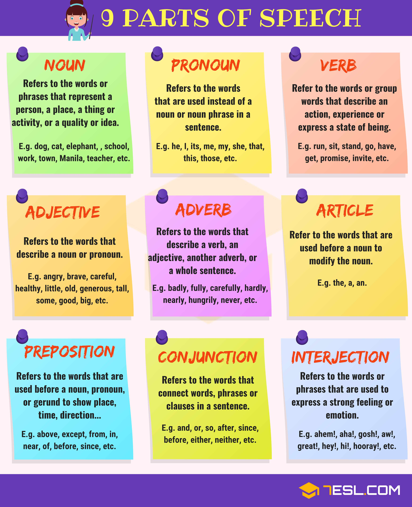

Parts of speech

determiners
A determiner is a word that modifies, describes, or introduces a noun
types
- Articles (such as ‘a’, ‘an’, and ‘the’)
- Possessive Determiners (such as ‘my’, ‘your’, ‘his’, ‘her’, ‘its’, ‘our’ and ‘their’)
- Demonstrative Determiners (such as ‘this’, ‘that’, ‘those’ and ‘these’)
- Quantifiers (such as ‘some’, ‘a few’, ‘many’, ‘a little’, ‘little’, ‘few’, ‘none’, etc)
- Distributive Determiners (such as ‘every’, ‘each’, ‘either’, ‘neither’, ‘both’, ‘all’, ‘half’, etc.)